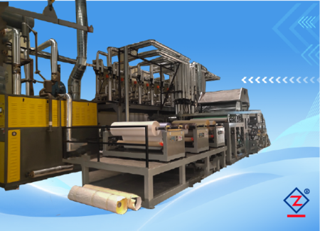

Ghép màng công nghiệp
Máy ghép đa chức năng
Thiết bị cho dây chuyền cần xử lý nhiều loại vật liệu, lớp ghép và yêu cầu sản phẩm khác nhau.

Thông số chính
| Vật liệu ghép | PVC, PP, PET, màng mềm/cứng |
|---|---|
| Khổ ghép | 500 - 3000 mm |
| Tốc độ máy | 5 - 60 m/phút |
| Điều khiển lực căng | Thủ công / tự động |
| Nguồn điện | 380 V + N, 50 Hz |
| Tổng công suất | Gia nhiệt dầu truyền nhiệt: 50 kW; gia nhiệt điện: 180 kW |
Chi tiết cấu hình đầy đủ
| Kiểu máy | Cấu hình màng bảo vệ, back coating và phủ gạt. |
|---|---|
| Truyền động | Động cơ biến tần, kết nối truyền động qua hộp giảm tốc. |
| Hệ thống lực căng | Điều khiển lực căng kỹ thuật số toàn tuyến, có thể tinh chỉnh thủ công. |
| Nối liệu | Hai trạm, xả/thu cuộn tích hợp, đổi liệu không dừng máy. |
| Điều khiển vận hành | PLC toàn tuyến, tủ điện tập trung, đồng bộ biến tần kỹ thuật số, màn hình cảm ứng HMI. |
| Điều khiển nhiệt | PID kỹ thuật số độc lập, có thể chia nhiều nhóm nhiệt độ. |
| Gia nhiệt | Có thể chọn khí gas hoặc dầu truyền nhiệt tiết kiệm điện. |
| An toàn | Nút dừng khẩn cấp và thiết bị bảo vệ an toàn. |
| Khác | Canh biên servo siêu âm; xả/thu cuộn trung tâm tự động hai trạm. |
Câu hỏi thường gặp
Trước khi chọn máy cần xác nhận gì?
Máy có thể tùy chỉnh theo vật liệu của nhà máy không?
Có. Cấu hình máy cần xác nhận theo vật liệu, khổ rộng, tốc độ, phương thức gia nhiệt, yêu cầu thu/xả cuộn và mức tự động hóa.
Thông số trên trang có phải là cấu hình duy nhất không?
Không. Thông số thể hiện phạm vi tham khảo từ dòng máy gốc. Khi báo giá, kỹ thuật sẽ xác nhận lại theo sản phẩm đầu ra và điều kiện nhà máy.
Khách hàng nên gửi gì trước khi nhận tư vấn?
Nên gửi mẫu vật liệu, khổ rộng, độ dày, tốc độ mong muốn, hình sản phẩm hiện tại và quy trình cần làm: in, phủ, ghép, sấy, cuộn hoặc xẻ.
Liên kết liên quan
Tiếp tục xem giải pháp phù hợp
Thông tin cần gửi để báo giá chính xác
| Vật liệu | Cho biết loại vật liệu chính, ví dụ PVC, PP, PET, BOPP, giấy, vải lưới, sàn cuộn hoặc bạt quảng cáo. |
|---|---|
| Khổ rộng | Gửi khổ vật liệu đầu vào và khổ thành phẩm mong muốn. |
| Tốc độ mong muốn | Nêu tốc độ sản xuất dự kiến hoặc sản lượng mỗi ngày. |
| Quy trình cần làm | In, ghép màng, phủ keo, sấy, tạo xốp, thu cuộn, xẻ cuộn hoặc dây chuyền hoàn chỉnh. |
| Yêu cầu nhà máy | Nguồn điện, không gian lắp đặt, phương thức gia nhiệt và yêu cầu tự động hóa. |